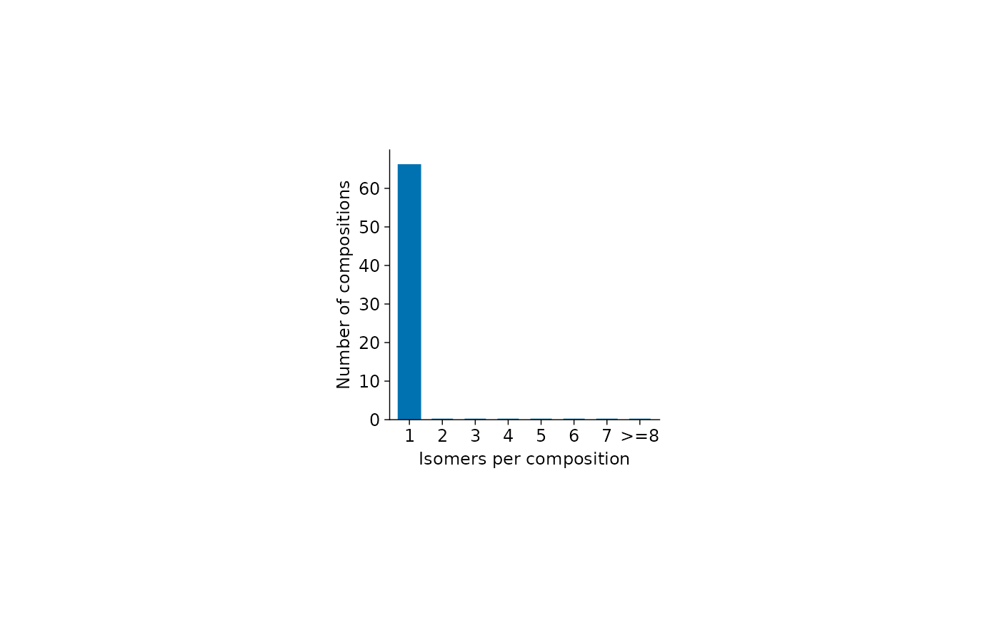

Distribution of isomers per glycan composition
plot_isomers_per_comp.RdCount distinct annotated structures within each glycan composition across
all samples and draw a single-colour bar plot with bins 1 to 7 and >=8.
Arguments
- x
A
glyexp::GlycomicSE()orglyexp::GlycoproteomicSE()withglycan_compositionandglycan_structurerow annotations.- weight
Either
"equal"(default), counting compositions in each bin, or"abundance", summing their abundances across all eligible rows and samples usingglydet::wsum(). Abundance weighting requires finite, non-negative, raw linear-scale abundances; missing values are omitted.- ...
Common appearance options in glyvis_plot_options. Bars use the first colour in
palette. The default plot area is 50 by 50 mm.
Value
A tidyplot, also inheriting from ggplot. Its data contains
ordered category bins, count (number of compositions), and value
(the plotted count or pooled abundance).
Details
The bar at 2 counts compositions with exactly two distinct annotated
structures. Structure identity uses the character representation of
glycan_structure, as in plot_glycans_per_site(). Counts are pooled
across proteins and sites, so repeated structures do not increase isomer
counts. Duplicate measurements contribute their abundance in abundance
mode. No protein, site, or glycan-type annotation is required.
Rows missing either composition or structure are excluded with a warning, including their abundance. Compositions with no remaining structures are omitted; empty input or absence of eligible rows raises an error. Bin assignments depend on annotations regardless of zero or missing assay values. No sample-wise normalization is performed. All eight bins are retained, including empty bins.
Examples
plot_isomers_per_comp(glyexp::real_experiment2)
